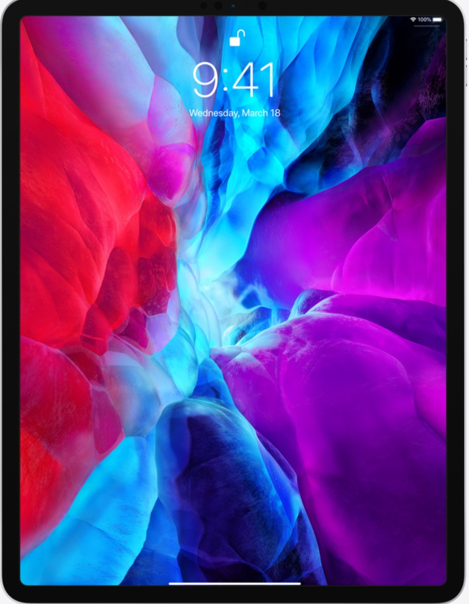
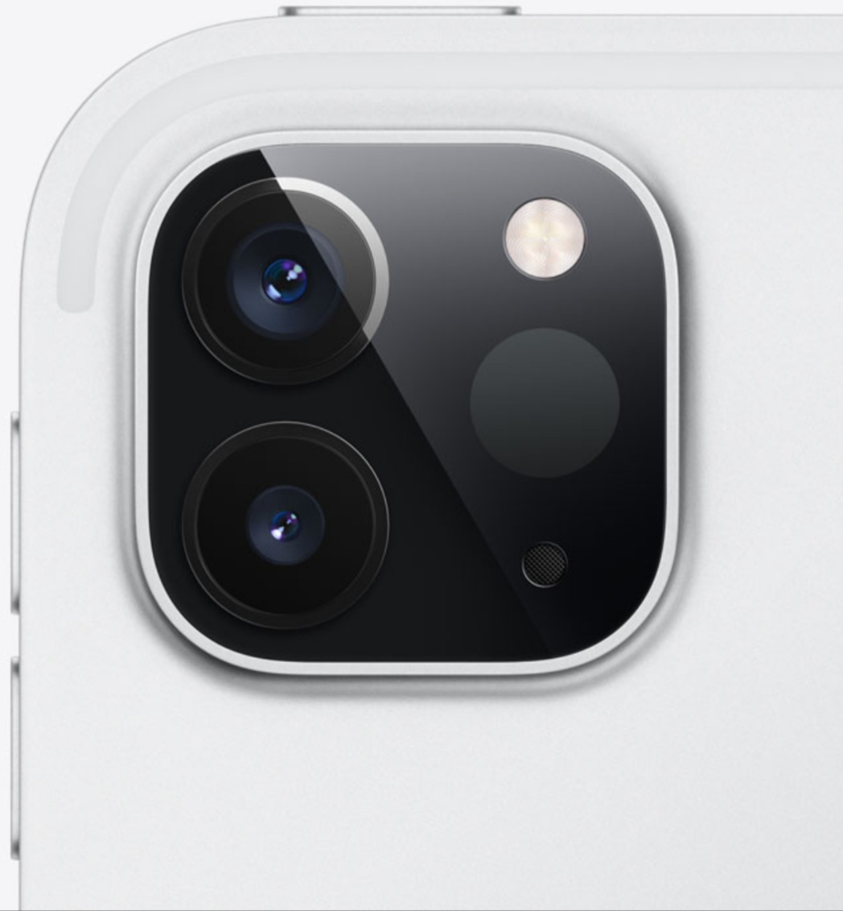
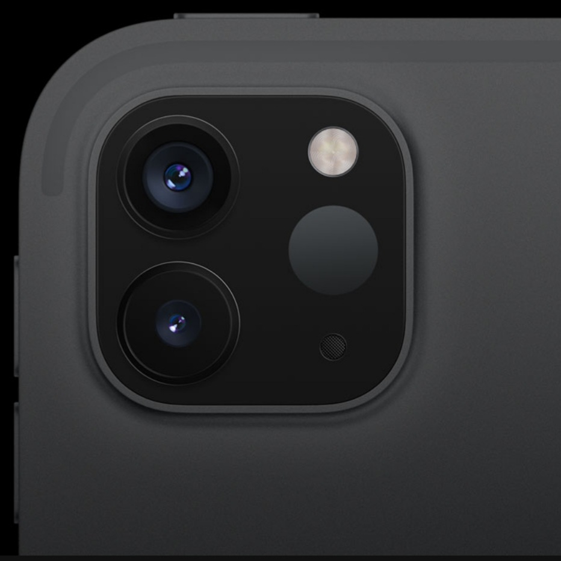

Your next computer
is not a computer.
It’s a magical piece of glass.
It’s so fast most PC laptops can’t catch up.
It has pro cameras that can transform reality.
And you can use it with touch, pencil,
keyboard, and now trackpad.
It’s the new iPad Pro.
Watch the film
Liquid Retina technology
The edge-to-edge Liquid Retina display is not only gorgeous and immersive, but also
features incredibly advanced technologies.Like ProMotion, True Tone,andindustry‑leading
color accuracy, which make everything feel responsive and look stunning. Quite
simply, this combination of features makes it the world’s most advanced mobile display.
Pro Cameras
Advanced cameras combined with a large
display, fast performance and highly
calibrated sensors have always made iPad
uniquely capable. The Wide and new
Ultra Wide cameras help you frame the
perfect photo or video. And together with
studio‑quality mics and four speaker
audio, you can even set up a multi‑camera
filmmaking rig.

LiDAR Scanner
LiDAR (Light Detection and Ranging) is
used to determine distance by measuring
how long it takes light to reach an object
and reflect back. It’s so advanced, it’s
being used by NASA for the next Mars
landing mission. And it’s now been
engineered to fit in the thin and light
iPad Pro.
The custom-designed LiDAR Scanner
uses direct time of flight to measure
reflected light from up to five metres away,
both indoors and out. It works at the
photon level, operates at nano-second
speeds and opens up tremendous
possibilities for augmented reality
and beyond.

The LiDAR Scanner works with the pro cameras,
motion sensors and frameworks in iPadOS to
measure depth. This combination of hardware,
software and unprecedented innovation makes
iPad Pro the world’s best device for
augmented reality.